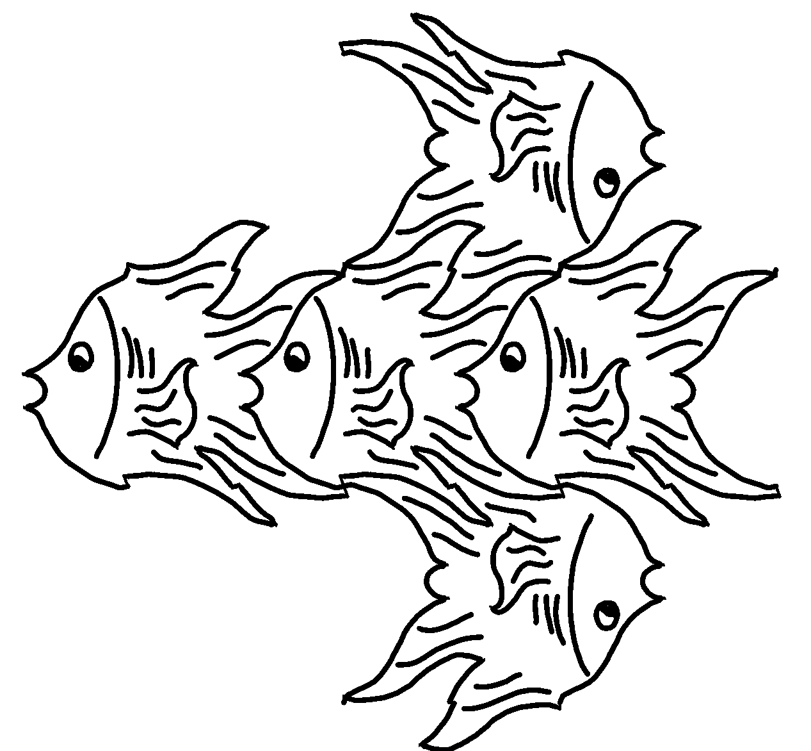

Tessellations
Two interactive interfaces for creating tessellations, developed for the research project “Playing with Patterns: an Escher Inspired Interactive Museum Experience.”
Drawing Interface
Create tessellations by directly drawing edges and assigning symmetries within the interface.
 Open Drawing Interface
Open Drawing Interface
Nodes Interface
Create tessellations by choosing a symmetry and manipulating nodes which copy and transform according to the chosen symmetries.
 Open Nodes Interface
Open Nodes Interface
About the Project
This project contains two distinct interfaces for creating tessellations. Each interface is implemented in a different Unity scene, with a separate WebGL build for each version.
The interfaces were designed primarily for use on a touchscreen, but can also be explored using a computer.